Caso 015 · Ami Shinar - Amir Mann · 2014 · transporte (estación de tren)
El boceto muestra una silueta alargada, con una línea de cubierta que sube de izquierda a derecha, un entramado oblicuo y un terreno casi horizontal. Lo leo literalmente: una barra única de 9 x 42 m con un faldón de chapa de pendiente constante, 15,75 %, que sube hacia el norte de z = 3,20 m (sur) a z = 9,97 m (norte). Orientada de norte a sur, paralela a la vía, la cubierta se prolonga 4 m sobre el andén este y forma su marquesina. El lado bajo da al sur, que es el lado de sol alto, y el lado alto, de 7,8 m de ventana continua, da al norte.
Se reconoce un parecido con una tipología de estación con marquesina.
El edificio es de un nivel y medio. En planta baja están el vestíbulo, los servicios y el andén este. Un cruce elevado a 5,20 m (galería, pasarela de 16 m sobre las vías y torre con escalera y ascensor) lleva al andén oeste, porque el acceso solo es posible por el este (encargo §4).
Clima BSh/Csa: verano de 30-33 °C, oscilación diaria moderada o alta, lluvia inferior a 500 mm. La estrategia es masa en fachada (bloque de hormigón de 30 cm más aislamiento exterior), sombra de la marquesina y del arbolado de la plaza, y ventilación por efecto chimenea en el hall, entre las ventanas bajas del oeste y la ventana alta del norte.
| Partido 1 (elegido): barra única con faldón | Partido 2: dos piezas con hall elevado sobre las vías | |
|---|---|---|
| Programa | todo en una pieza; servicios en la banda sur, vestíbulo al norte | hall sobre las vías, servicios aparte |
| Clima | vestíbulo de 207 m² con ventilación cruzada y chimenea | hall elevado, más expuesto al sol |
| Accesos | un único acceso desde la plaza este, con vistas a los andenes | acceso por una rampa larga (2 plantas) |
| Normativa | PMR por ascensor y recorrido plano en planta baja | 5,2 m de rampa a 6 % = 87 m: inviable |
| Coste | una cimentación de solera y zapatas corridas | puente-edificio sobre las vías |
Se elige el 1. El partido 2 obligaba a una rampa de unos 87 m o a un segundo ascensor y no aprovecha el terreno llano.
| Masiva (elegida) | Ligera | |
|---|---|---|
| Fachada | bloque de hormigón de 30 cm + aislante exterior 6 cm + enlucido; huecos del 12 % (este), 34 % (oeste, vestíbulo), 28 % (norte) | chapa y panel sándwich de 8 cm; hueco 35 % |
| Protección solar | el alero sur y la marquesina; sin hueco al sur | lamas |
| Ventilación | huecos bajos al oeste y ventana alta al norte | ventilación mecánica |
| Motivo | la oscilación diaria alta pide masa; el ruido ferroviario y rodado también | menor peso |
Planta baja (cota 0,00, 378 m²), de sur a norte: banda de servicio (sala de personal 18 m², oficina del jefe de estación 15 m², instalaciones 16,7 m², almacén 15,8 m², limpieza y basuras 12,6 m², vestuario y aseo del personal 20,7 m², corredor de 1,58 m); aseos públicos (aseo 1 y 2 de 6,9 m², accesible de 8,4 m²); vestíbulo y sala de espera de 207 m², con 5 bancos centrales, 4 bancos junto a las ventanas, 2 máquinas expendedoras y la taquilla de 22,7 m² al norte; y andén este de 4,5 m x 60 m bajo la marquesina. Nivel 1 (5,20 m): galería de 9 x 6,8 m sobre el vestíbulo norte, con dos bancos y mirador al norte, y pasarela de 2,4 x 16 m sobre las vías hasta una torre de hormigón en el andén oeste (escalera y ascensor 1,4 x 1,4 m). El ascensor del lado este está en la galería. Exterior. Plaza este (272 m²) con 4 árboles, calle de carga (117 m²) para el almacén y la limpieza, 2 plazas reservadas (35 m²) junto a la entrada, aparcamiento de 20 plazas (2 reservadas) con calle de 5,5 m y parada de autobús, y puente de 18 m sobre el cauce hasta la glorieta. Superficie construida: unos 550 m². Programa técnico. Instalaciones, basuras, limpieza y carga cuentan con local propio y puerta al exterior este. Carga y descarga: calle de carga con acceso rodado desde el puente y el aparcamiento; la furgoneta llega hasta las dos puertas del almacén (1,6 y 1,0 m).
| Exigido | Propuesto | Cumple / desviación |
|---|---|---|
| Plantas (documento) | P01 planta baja, P02 primera, P03 cubierta | Cumple |
| Secciones | S01 longitudinal A-A, S02 transversal B-B | Cumple |
| Alzados | S03 este, S04 oeste, S05 norte, S06 sur | Cumple |
| Detalles constructivos | D01 fachada 1:20 | Cumple |
| Espacios exteriores | U02 urbanización, U01 situación | Cumple |
| Andenes y espera | andén este 4,5 x 60 m cubierto; andén oeste 8,5 x 60 m con dos marquesinas (y -10 a 25,2 y 40,4 a 50) | Cumple |
| Vestíbulo y venta de billetes | 207 m² + taquilla 22,7 m² | Cumple |
| Circulaciones verticales y PMR | 2 escaleras (2 tramos de 15 contrahuellas y rellano a 2,60 m), 2 ascensores, pasarela sin escalón | Cumple |
| Aseos | 3 (2 + 1 accesible) + vestuario del personal | Desviación leve: dotación mínima para una ciudad pequeña; se prevé un cuarto aseo en la fase siguiente si crece la demanda |
| Locales técnicos y de personal | 6 locales | Cumple |
| Aparcamiento y parada | 20 plazas, 2 reservadas, calle de 5,5 m, parada de autobús | Desviación: la parada tiene bahía y banco, no marquesina (no proyectada) |
| Acceso rodado y peatonal por el este | puente desde la glorieta | Cumple |
| Sin acceso por el oeste | el andén oeste solo se alcanza por la pasarela | Cumple |
| Normativa: puerta 0,80 m, pasillo 1,20 m, escalera, barandilla | puertas de 0,9-1,0 m; vestíbulo ≥ 4 m; escalera de 1,20 m, tabica 17,3 cm, huella 28 cm; barandillas de 1,10 m | Cumple |
| Superficie construida | ~550 m² | Cumple (a definir) |
| Elemento | Material | Espesor | Motivo |
|---|---|---|---|
| Cubierta principal | chapa ondulada, 15,75 %, solape de 20 cm | 30 cm paquete | caída al sur; sombra |
| Marquesina andén oeste | chapa, 3 % hacia el oeste | 20 cm | el agua se aleja de la vía |
| Fachada | bloque + enlucido (oeste, norte, sur); bloque visto en el lado este | 30 cm | masa y bajo mantenimiento |
| Tabiques | bloque enlucido | 10-15 cm | locales |
| Suelo vestíbulo | losa | 4 cm | tránsito |
| Suelo servicios | losa / baldosa | 3-4 cm | limpieza |
| Suelo personal y taquilla | tarima | 2 cm | calidez |
| Carpinterías | ventana de aluminio, puertas de 0,9-1,8 m | ||
| Pasarela | tabique de metal con ventanas | 12 cm | ligera sobre las vías |
Itinerario plano desde la plaza hasta el andén este. Hacia el andén oeste, ascensor de 1,4 m en cada lado de la pasarela; las escaleras son de 1,20 m con rellano de 1,2 m. Puertas de 1,6-1,8 m al andén y 1,8 m a la plaza: tres salidas del vestíbulo (dos al andén, una a la plaza). Pasarela de 2,40 m. Plazas reservadas junto a la puerta de la plaza con zona común de transferencia de 1,2 m.
La comprobación lógica da 0 errores y 0 avisos. Los avisos de ocupación (<60 %) de P03, S01-S06, D01 y U01 se deben a láminas alargadas (barra de 53 m a 1:100) con un único dibujo; no se ha agrupado porque cada lámina tiene un tema distinto. P03 se probó en A2 y no cabe.
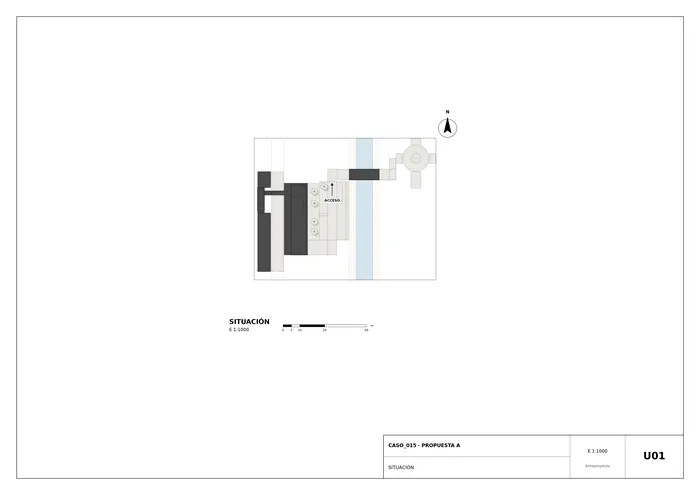
U01 · Situación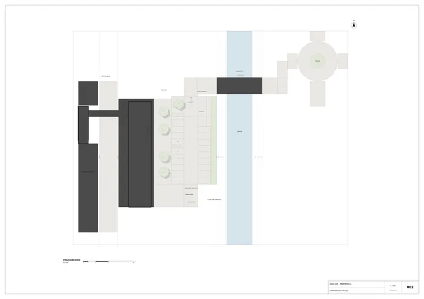
U02 · Urbanización y paisaje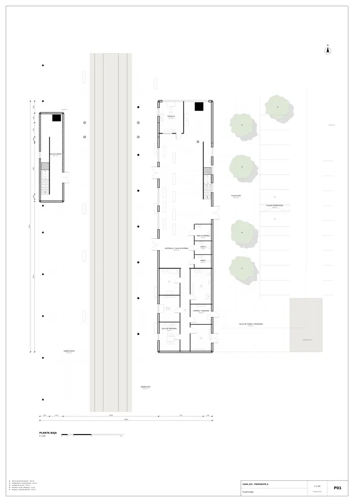
P01 · Planta baja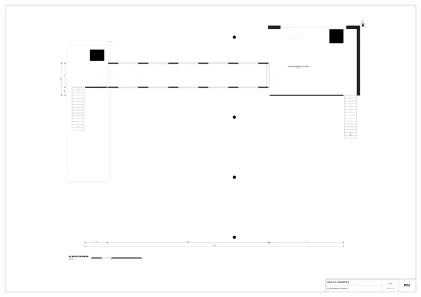
P02 · Planta primera (pasarela)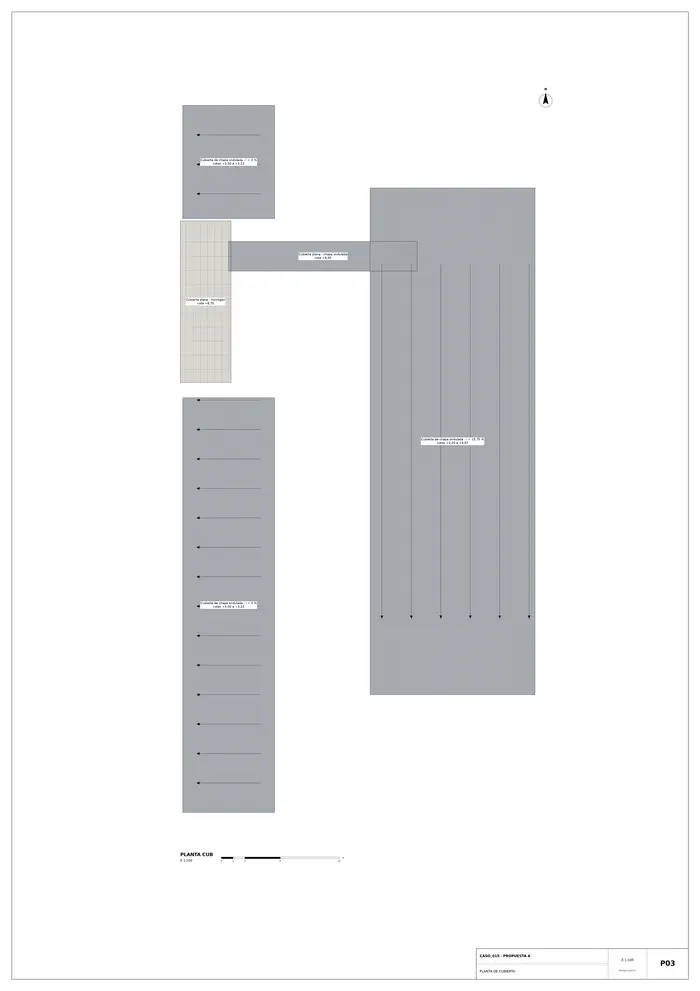
P03 · Planta de cubierta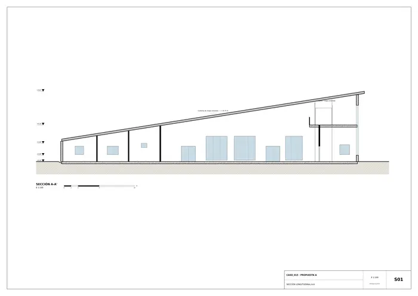
S01 · Sección longitudinal A-A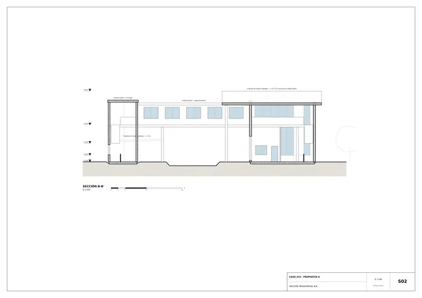
S02 · Sección transversal B-B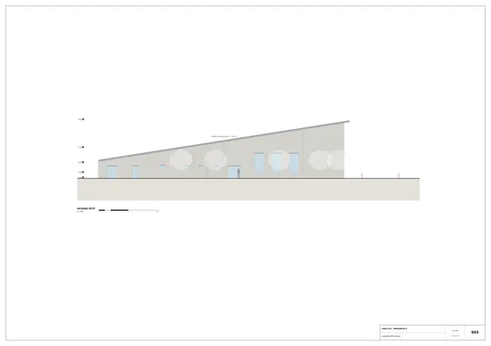
S03 · Alzado este (plaza)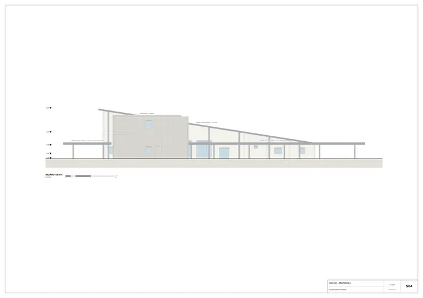
S04 · Alzado oeste (andén)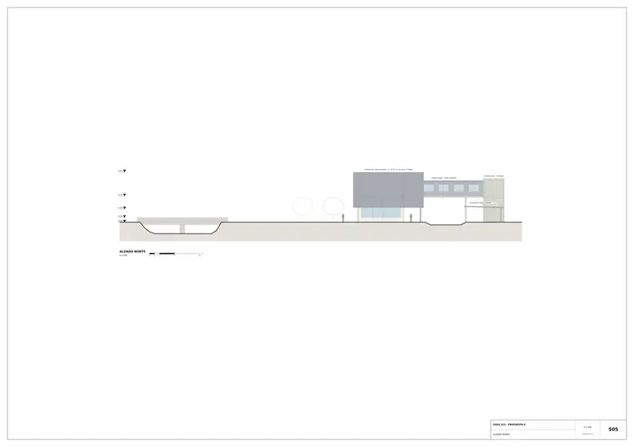
S05 · Alzado norte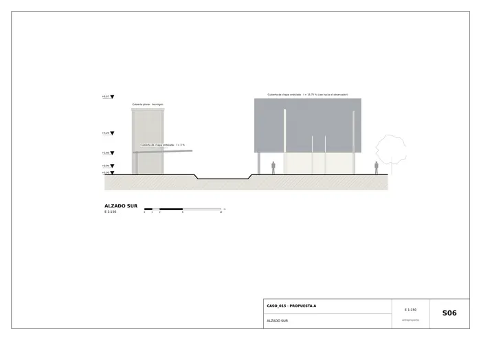
S06 · Alzado sur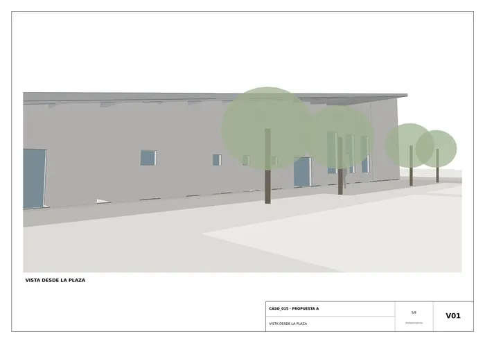
V01 · Vista desde la plaza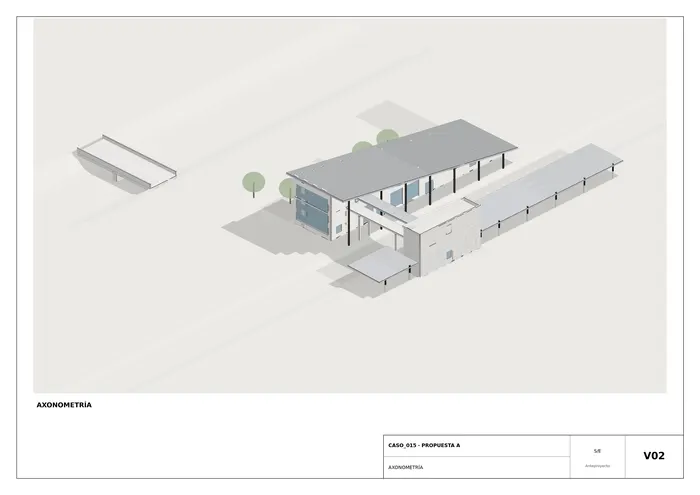
V02 · Axonometría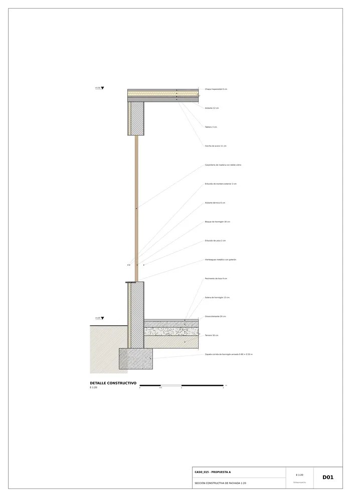
D01 · Sección constructiva de fachada 1:20Memoria de la propuesta tal como la entregó el sistema. Se han omitido las notas internas del proceso (revisiones, control de reconocimiento y referencias a archivos de trabajo).